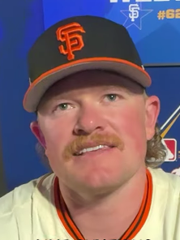
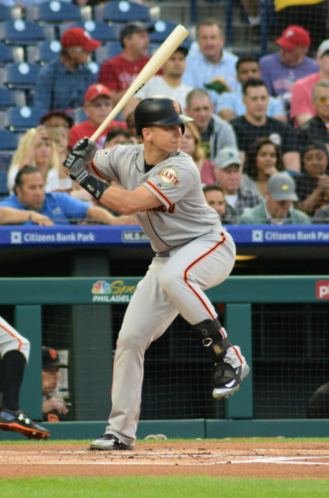

Giants · Column
The Giants Keep Promising October. Oracle Park Is Still Waiting.
San Francisco keeps building teams that are fine. Fine does not fill the ballpark in September.
Read more →San Francisco Giants coverage, Oracle Park series notes, and lineup watch.

San Francisco keeps building teams that are fine. Fine does not fill the ballpark in September.
Read more →
Three World Series titles in five years, in 2010, 2012, and 2014.
Read more →